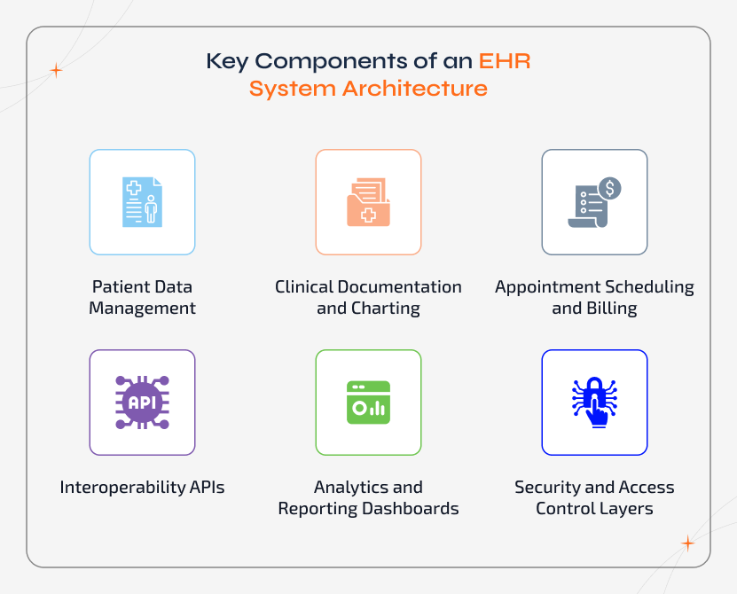
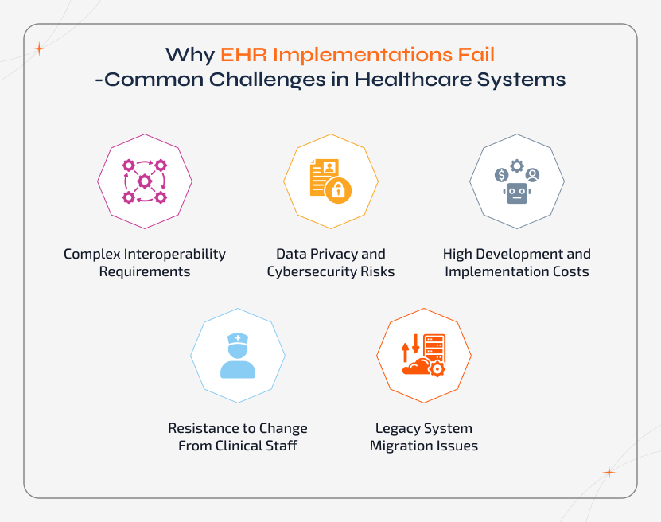
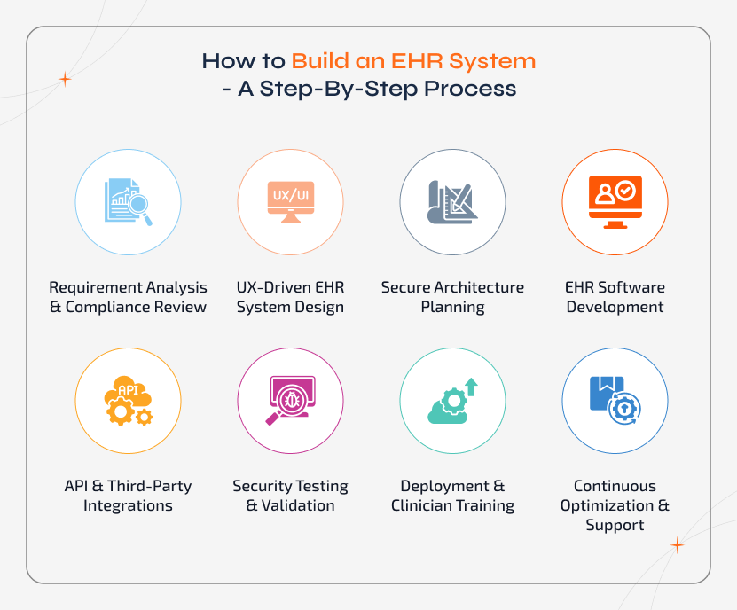

As per records, nearly 9 in 10 U.S physicians are using Electronic Health Record (EHR) systems in their practice, of which 83.6% are now using certified EHR systems.
Healthcare organizations are involved in managing massive volumes of patient data, clinical records, and operational workflows. Relying on manual processes can slow down the care delivery and lead to delays, risks, and operational challenges. This is why EHR software development is essential for modern healthcare providers.
In this blog, we break down everything you need to know about what Electronic Health Record systems are, how they differ from Electronic Medical Record Systems, and why healthcare providers rely on EHR software development over ready-made platforms. You will also find details like challenges in building EHR systems, EHR software development cost, modern trends in EHR development, etc.
Read on to understand why investing in custom EHR software development is a strategic necessity for building scalable, compliant, and future-ready healthcare operations.
What is an EHR Software System
An EHR software system is a modern Electronic Health Record that securely stores patients' information in one centralized location. It basically works as a digital system where healthcare providers can record, manage, and share patient health information more accurately while being less dependent on paperwork.
With an EHR system, doctors and care provider teams can access a single reliable source of patient data at any time. This supports better clinical decisions, improves coordination across departments, and reduces errors that occur due to fragmented records.
Besides, Electronic Health Records help doctors and clinicians to quickly view the medical histories, diagnoses, medications, treatment plans, lab reports, etc., in real time. Above all, EHR software supports moving all this information securely between hospitals, clinics, labs, pharmacies, and telehealth platforms. This interoperability nature is what makes the EHR systems a central part of modern healthcare software development.
Why EHR Systems Are Essential for Healthcare Organizations
In the digitally evolving healthcare landscape, organizations are expected to deliver high-quality patient care while managing rising costs and strict regulatory requirements. With the help of EHR systems, all these expectations can be met by replacing manual workflow and disconnected tools with a single, streamlined digital workflow. A well-planned Electronic Health Record system helps healthcare providers with the following:
- Improves clinical accuracy and reduces medical errors.
- Offers smooth coordination between doctors, nurses, labs, and specialists.
- Support compliance with healthcare regulations and audit requirements.
- Helps scale operations easily when patient volumes and services increase.
- Reduces administrative work, paperwork, and repetitive data entry.
With the custom healthcare solutions, healthcare organizations will be able to get full control over system features, integrations, and data security. Unlike off-the-shelf tools, custom EHR software development is built to match the real clinical workflows. In addition, it can adopt with evolving care models, operations, and technology needs.
Want to Understand How Custom EHR Systems Support Modern Healthcare?
Learn how custom EHR systems improve clinical workflows, security, and supports evolving care models and regulations.
Different Types of EHR Systems Prevalently Used in Healthcare
It is to note that not all healthcare organizations are entitled to use the same type of EHR system. The right fit for each of them differs and is mostly based on factors like organization size, data security needs, budget, and how clinicians work every day. The most commonly used EHR system types in healthcare in recent times are discussed below.
1. Cloud-Based EHR System
As the name suggests, Cloud-based EHR systems store
the data on the secured cloud servers. The best part of this EHR system is they
are easy to scale, supports remote access, and reduces the need for costly
on-site infrastructure.
- Best Fit For: Small to mid-sized hospitals, clinics, startups, & growing healthcare networks that need scalability, lower upfront costs, and remote access.
2. On-Premise EHR Software
This type is hosted within
the organization's own servers. It allows healthcare providers to control how
data is stored, accessed, and protected, making it suitable for environments
with complex compliance and internal security requirements.
- Best Fit For: Large hospitals, enterprise healthcare groups, and organizations with strict data residency, security, and regulatory compliance requirements.
3. Web-Based EHR Platforms
Those web-based EHR
platforms are accessed via browser ,and they work across multiple devices. Thus,
they offer flexibility, faster deployment, and lower dependency on specific
hardware or operating systems.
- Best Fit For: Multi-location clinics, outpatient centers, and healthcare providers looking for quick deployment and browser-based access.
4. Mobile EHR Applications
Doctors and care teams can
use mobile EHR applications to access patient records, update notes, and review
alerts on the go. They improve the responsiveness and support modern,
mobile-first care delivery.
- Best Fit For: Home healthcare providers, emergency care teams, telehealth services, and clinicians who need real-time access on the go.
5. Specialty-Specific EHR Solutions
Specialty-specific
EHR solutions are built to meet the unique needs of specific medical practices.
They support field-specific workflows, documentation formats, and regulatory
requirements that general EHR systems may not fully address.
- Best Fit For: Specialty clinics such as cardiology, pediatrics, mental health, diagnostics labs, and niche medical practices with unique workflows.
Thus, choosing the right model requires thoughtful EHR system design to balance usability, performance, security, and long-term scalability.
EHR vs EMR - Key Differences Healthcare Organizations Should Know
Most often, EHR and EMR systems are used interchangeably. However, the fact is that both are built for different levels of healthcare operations.
1. Electronic Medical Records (EMR)
EMR is a
digital version of patient records used within a single clinic or medical
practice. They help doctors in storing and managing patient histories,
diagnoses, and treatments. It is important to note that the data usually
stays inside that one organization.
2. Electronic Health Records (EHR)
EHRs are
designed for broader use. i.e., it allows patient information to be shared
securely across hospitals, clinics, labs, pharmacies, and other care
providers. This makes EHR systems better suited for coordinated care,
continuity, and long-term scalability.
So, for healthcare organizations that are planning for growth, integration, and data exchange, should opt beyond EMR software development to enterprise-level EHR system development as a practical and strategic step.
Key Components of an EHR System Architecture
Most often, a strong EHR system architecture is built from multiple components that work together to support daily healthcare operations. Each part plays a specific role in keeping patient data accurate, secure, and easy to access. The key components of EHR include:

1. Patient Data Management
Used to store and organize
patient information such as medical history, demographics, and test results in
one central system.
2. Clinical Documentation and Charting
This allows
doctors and care teams to digitally record diagnoses, treatment notes, and
clinical observations.
3. Appointment Scheduling and Billing
It helps manage
appointments, insurance details, and billing processes, so as to reduce the
administrative effort manually.
4. Interoperability APIs (FHIR, HL7)
This provides
secure data exchange between EHR systems, labs, pharmacies, and other healthcare
platforms.
5. Analytics and Reporting Dashboards
These
dashboards turn real-time data into clear insights. Thus, healthcare teams can
track patient outcomes, operations, and performance using real-time data.
6. Security and Access Control Layers
This protects
sensitive patient information through role-based access, encryption, and
compliance controls.
Put together, all of these components support smooth workflows, reliable system performance, and strong EHR data security practices across healthcare organizations.
Essential Features Required for Successful EHR Software Development
The benefit of having an effective EHR system means that healthcare organizations can perform their everyday work lot more easily while keeping patient data safe and compliant. The right features help improve adoption, reduce errors, and support smooth clinical and administrative workflows.
1. Role-Based Access & Permissions
It is vital to
limit data access based on user roles to ensure sensitive patient information is
available only to the authorized staff.
2. E-Prescriptions & Medication Tracking
EHR software
should help manage prescriptions digitally. This often reduces errors and helps
track medication history accurately.
3. Clinical Decision Support Systems
Assists
clinicians with reminders, alerts, and evidence-based recommendations during
patient care.
4. Patient Portals & Self-Service Access
It is vital
to give patients easy access to their records, appointment scheduling, and
communication with providers.
5. Audit Logs & Compliance Reporting
EHR should record
system activity to support transparency, audits, and healthcare regulatory
requirements.
6. Integration with Labs, Imaging, & Billing Tools
This allows seamless data sharing between EHR software and
external systems. Thus, helps reduce duplicate data entry and delays.
All of the above features are essential and work together to enable EHR workflow optimization, improve care quality, and ensure the system meets regulatory standards.
See How These EHR Features Work Together in Practice
Learn how essential EHR features connect to improve workflows, accuracy, and compliance.
How EHR Software Solves Clinical Workflow Challenges
A lot of times, Healthcare teams end up dealing with multiple systems, repeated data entry, and time-consuming paperwork. All of these challenges can slow down care and increase the risk of errors. This is when EHR software comes in and helps simplify daily clinical workflows by bringing everything into one connected system. The following are the clinical workflow challenges that an EHR system solves:
- Automates documentation and data entry to thereby reduce manual work for the clinicians.
- EHR minimizes duplicate tests and errors by keeping patient data accurate and up to date.
- This improves collaboration between departments through shared access to records.
- EHR software provides real-time access to patient information at the point of care.
As a result, healthcare teams can make faster decisions, deliver better patient care, and support continuous medical records software innovation across the organization.
Why EHR Implementations Fail - Common Challenges in Healthcare Systems
Although there are multiple advantages that come with using EHR systems, implementing and maintaining them doesn't come without challenges. Many healthcare organizations come across not just technical and operational challenges, but also adoption issues during EHR software development and rollout. Some of the most common EHR software challenges include:

1. Complex Interoperability Requirements
Connecting EHR systems with labs, pharmacies, insurers, & third-party platforms can be difficult when there are no proper standards and APIs.
2. Data Privacy and Cybersecurity Risks
EHR systems involve handling sensitive patient information and thus making strong security and compliance measures essential.
3. High Development and Implementation Costs
Building, customizing, and deploying EHR software often requires significant investment and this is especially true for those enterprise-level systems.
4. Resistance to Change From Clinical Staff
When there is poor usability or a lack of training, this can slow down adoption and reduce system effectiveness.
5. Legacy System Migration Issues
Moving data from older systems into a new EHR platform can be complex and risky when there is no proper planning is done.
These challenges can be reduced through expert healthcare software modernization services or targeted software project rescue efforts. Thus, it is possible to fix the failing implementations, improve usability, and ensure long-term system success.
Business Benefits of Custom EHR Software Development
With custom EHR software development, healthcare organizations will get more flexibility, control, and long-term value compared to the readily available systems. So, teams need not adapt to fixed features; instead, they can take advantage of using the custom EHR solutions that are built around how the organization actually works. The key business benefits include:
- Workflows are tailored to clinical needs, and this helps improve not just efficiency but also reduces staff getting overwhelmed.
- Offers better long-term cost control as companies have to pay only for what they need and can even scale up features later.
- Provides greater data ownership and security with full control over storage, access, and compliance.
- Offer easier scalability support and feature expansion possibilities whenever the patient volumes and services increase.
- Provides a stronger competitive advantage by delivering faster and patient-focused care with better connectivity.
Thus, customer healthcare solutions offer a smarter and more future-ready investment than the off-the-shelf EHR platforms.
Enterprise Innovation Trends Defining the Future of EHR Software Development
EHR systems are quickly evolving as healthcare sectors are looking for smarter, faster, and more connected ways to manage patient data. New technologies are changing the way how EHR software supports clinical decisions and everyday workflow.
Some of the key trends shaping the EHR software development include:
1. AI in EHR Systems
AI is used to help automate routine tasks, find patterns in patient data, and support predictive analytics for better clinical decisions.
2. Voice-Based Clinical Documentation
It is possible for doctors to record notes using voice, reduce typing time, and thereby improve accuracy during patient visits.
3. Blockchain for Secure Data Exchange
By using blockchain, it is possible to improve trust and security by creating tamper-proof records. This makes sharing medical data easier.
4. Advanced Population Health Analytics
EHR systems are now capable of analysing large data sets to track the outcomes, manage chronic conditions, and improve community health planning.
5. Growing Use of Mobile EHR Applications
Mobile EHR apps offer clinicians real-time access to patient information from anywhere, anytime.
All of the above trends are helping healthcare organizations use data more effectively and build smarter, future-ready EHR systems.
How to Build an EHR System - A Step-By-Step Process
Building a reliable EHR system involves proper planning. Hence, following a structured development process helps healthcare organizations minimize risks, ensure smooth adoption by clinical teams, and meet compliance requirements. Above all, it is vital to partner with the right MVP software development company to build EHR software solutions. The simple step-by-step process for EHR system development involves:

Step 1: Requirement Analysis & Compliance Review
The MVP software development company will work with clinicians to understand the workflows, data needs, and healthcare regulations, even before the development begins.
Step 2: UX-Driven EHR System Design
This involves UX designers creating simple yet intuitive interfaces that make it easy for clinicians to use the system on an everyday basis.
Step 3: Secure Architecture Planning
Solution architects start planning for a scalable and secure system architecture that, in tur,n protects the patient data.
Step 4: Custom EHR Software Development
Developers will get involved in building EHR features customized to clinical operations and business goals.
Step 5: API & Third-Party Integrations
The team will now integrate the EHR with pharmacies, labs, billing systems, and other healthcare tools.
Step 6: Security Testing & Validation
QA and security experts will test the system to ensure performance, compliance, and data privacy.
Step 7: Deployment & Clinician Training
The development partner will now deploy the system and train staffs to ensure smooth adoption.
Step 8: Continuous Optimization & Support
Once after the launch, the development team will provide updates, performance improvements, and ongoing support.
Build Your EHR System with a Proven Development Process
Partner with experts to build a secure, scalable EHR system aligned with clinical workflows and compliance needs.
How Much Does EHR Software Development Cost
The EHR software development cost depends on the project scope and complexity of the system that any healthcare organization plans to build. Hence, there is no fixed price involved as each EHR platform is designed based on specific clinical, technical, and compliance needs.
The major key factors that influence the EHR software development cost include:
- Feature complexity like clinical modules, reporting, and automation.
- Compliance requirements that include data privacy and regulatory standards.
- Integration needs that include labs, pharmacies, billing, and third-party systems.
- Data migration scope, like legacy Electronic Medical Records.
- AI and analytics capabilities for workflow optimization and insights predictions.
Overall, an EHR software development can be anywhere between the mid-five figures for a basic system, and it can extend to six figures approximately for enterprise-grade platforms with advanced features and integrations. With a clear product roadmap and phased development plan, it is possible to manage the overall software development cost and thereby avoid hidden expenses.
How to Choose the Right EHR Software Development Company
For any healthcare organization, choosing the right EHR software development company ensures the success of your EHR project. The right partner not only builds the system but also helps you avoid risks, delays, and compliance issues. When evaluating an EHR development company, you can look for:
- Check for proven healthcare experience with a clear understanding of clinical workflows.
- Compliance requirements that include data privacy and regulatory standards.
- Look for strong security and compliance practices that can protect sensitive patient data.
- Choose those offers hands-on experience in custom EHR system development and not just deliver generic software.
- Scalable architecture expertise that helps support future growth and integrations.
- Ongoing support and optimization services after deployment.
A trusted custom software development company ensures your system is reliable, compliant, and ready to scale as healthcare needs evolve.
Why Choose Sparkout for EHR Software Development
At Sparkout, we deliver end-to-end EHR software development solutions customized to the real needs of healthcare organizations. Our team ensures to build secure, scalable, and future-ready EHR platforms that align with clinical workflows, regulatory requirements, and long-term business goals.
We also specialize in custom EHR software development and help care providers with modernized legacy systems or even build new EHR solutions from the ground up. Sparkout's expertise spans healthcare software development, AI software development, and software project rescue. Thus, we improve any existing EHR systems that underperform or fail to scale.
By combining healthcare domain knowledge with strong engineering and compliance practices, we ensure organizations launch reliable EHR systems that improve care delivery, operational efficiency, and digital readiness.
Work with a Trusted EHR Software Development Partner
At Sparkout, we build or modernize secure, scalable EHR systems that meet healthcare compliance needs.
Conclusion
Over the years, EHR software has evolved from being a basic record-keeping tool to the core of modern digital healthcare. With the right EHR software development approach, healthcare sectors can improve care delivery, patient outcomes, simplify clinical and administrative workflows, and meet growing compliance demands with confidence.
Investing in a secure, scalable, and well-designed EHR system helps build a strong foundation for long-term growth, innovation, and smarter healthcare delivery in the years ahead.